Why it matters
Children are growing up in a changing digital world. They need strong values and future-facing confidence, with adults helping them engage thoughtfully rather than passively with new tools.
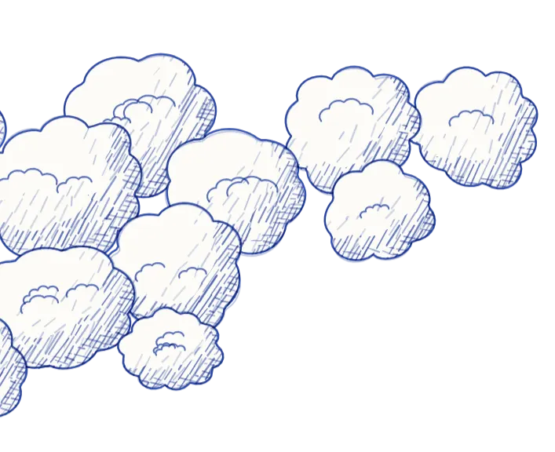
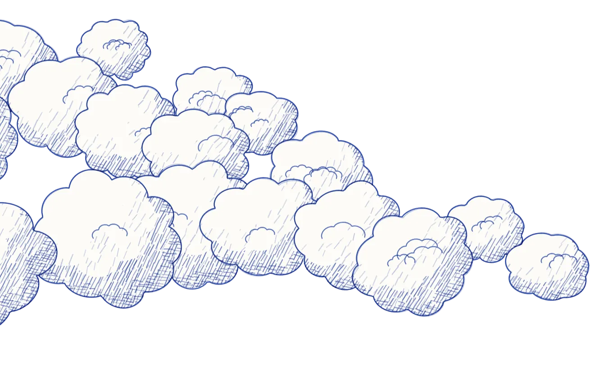
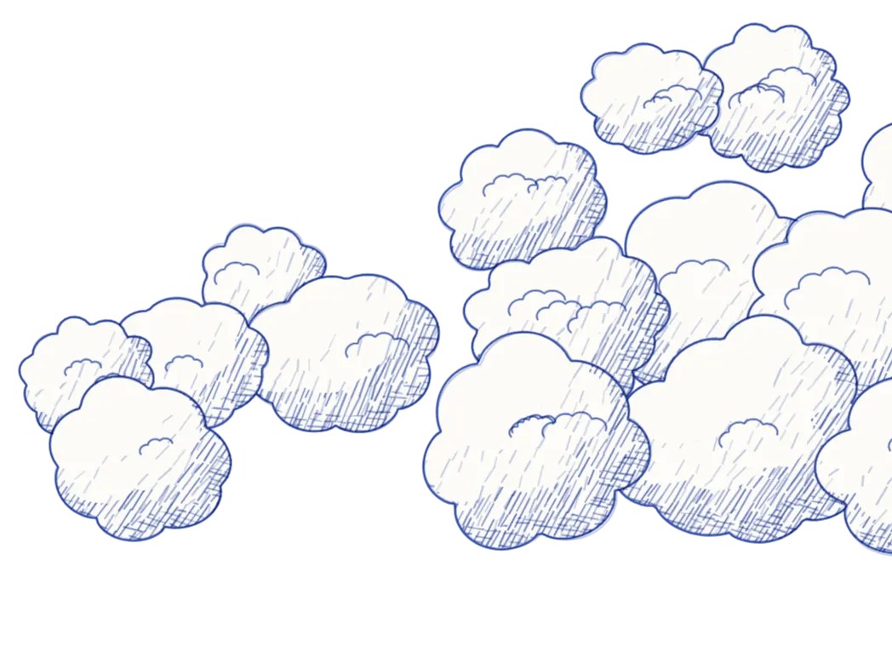
UK education and social impact initiative
SAI is developing after-school enrichment experiences for children, combining values-based learning, storytelling, creative expression and responsible AI awareness for schools, families and communities.
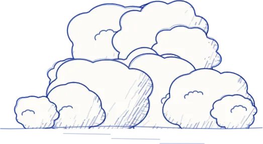
Why it matters
Children are growing up in a changing digital world. They need strong values and future-facing confidence, with adults helping them engage thoughtfully rather than passively with new tools.
Built for
Funding authorities, grant partners, schools, parents and community organisations looking for a calm, credible and responsible model.
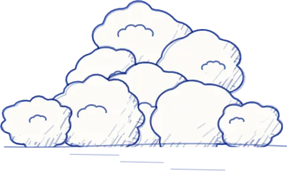
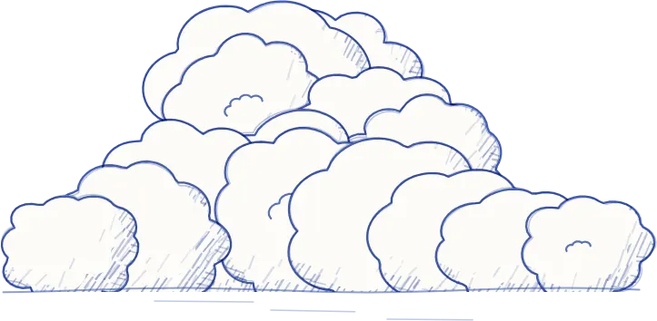
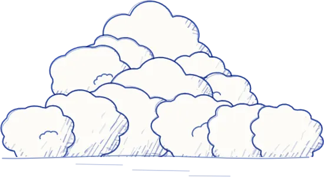
What we do
SAI helps children explore core values, discuss stories and choices, build confidence through creative expression and engage with AI-supported tools in an age-appropriate way.
Explore core values through guided discussion
Discuss stories, choices and consequences
Build confidence through creative expression
Use AI-supported tools in an age-appropriate way
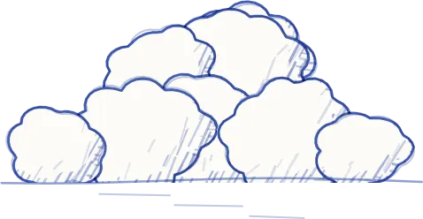
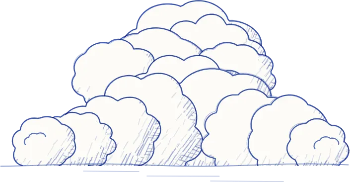
Why now
SAI takes a calm view of this moment. The aim is not to add hype, but to help children build judgement, confidence and creative agency with strong adult guidance.
A clear principle
Children do the thinking. Technology supports creativity and reflection.
That principle shapes the programme concept, the safeguarding stance and the way SAI speaks to schools, families and funding partners.
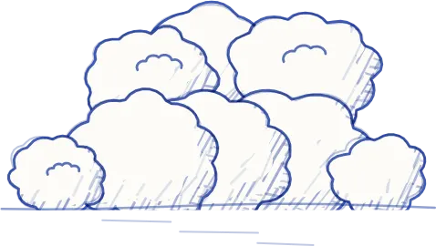
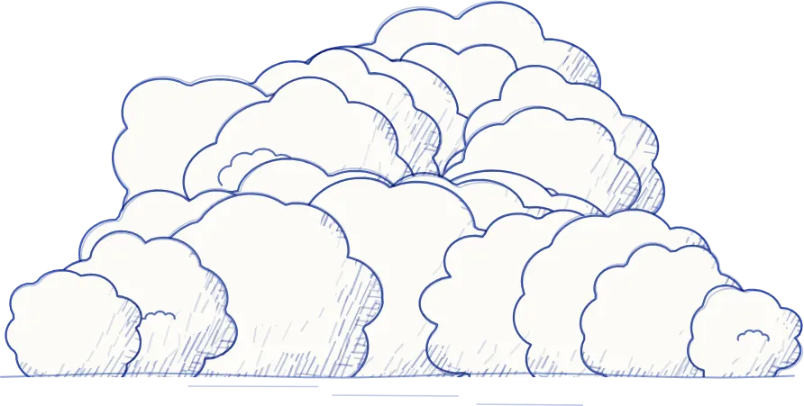
Why storytelling
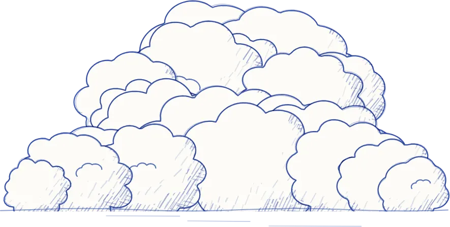
Concept · Ballpoint mode
A child draws only the outline and the pen adds light and shadow. Ready-made pieces, like trees, sit alongside their own drawings in one consistent style.
Draw a closed shape: a cloud, an apple, a face…
then lift your pen.
Safeguarding & Responsible AI
Safeguarding approach
Inclusion and confidence
SAI has a strong interest in helping girls and underrepresented young people see themselves as creators and future leaders in technology, not simply users of tools built by others.
Get in touch
We would like to hear from schools, community settings and funding partners who share this approach.